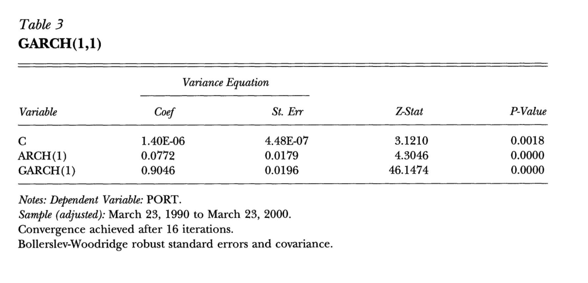

This project aims to replicate the GARCH model analysis presented in Robert Engle’s 2001 Nobel Prize lecture, “GARCH 101: The Use of ARCH/GARCH Models in Applied Econometrics.” The lecture demonstrates how GARCH models can be used to analyze and forecast financial market volatility.
Rationale behind the Study
From the initial inspection of the article, easy to obtain data
Well-known author so we asssumed that the methodology is sound and well-explained
The author’s research has had significant influence and impact in the field of time series analysis
Research could be easily extended for different datasets / portfolios
Steps in the Research
The replication focuses on the following:
Constructing a portfolio similar (or, hopefully, identical) to the one used in Engle’s paper
Calculating and analyzing portfolio returns
Fitting a GARCH(1,1) model to the portfolio returns
Examining the model’s performance in capturing volatility clustering
Generating volatility forecasts in the same manner as Engle did
By following Engle’s methodology, the project provides a practical implementation of GARCH modeling techniques for financial time series analysis.
Let’s use the GARCH(1,1) tools to estimate the 1 percent value at risk of a $1,000,000 portfolio on March 23, 2000. This portfolio consists of 50 percent Nasdaq, 30 percent DowJones and 20 percent long bonds. The long bond is a ten-year constant maturity Treasury. The portfolio has constant proportions of wealth in each asset that would entail some rebalancing over time.
Due to vagueness of the claim above, we’ll try to reverse engineer the portfolio, but it’s not a perfect solution. When we calculate return on the portfolio, we implictly assume daily rebalancing, i.e., weights are constant.
Fetching Stock Data
We’ll fetch the portfolio components data using the implemented function:
The function is implemented in src/utils.py
it uses yfinance - a Python package for downloading stock data from Yahoo Finance
start and end dates are taken from the article
weights for portfolio components are taken from the article, i.e. 50% Nasdaq, 30% Dow Jones, and 20% 10-year Treasury.
Code
# Parameters# Nasdaq, Dow Jones, and 10-year Treasurysymbols = ["^IXIC", "^DJI", "^TNX"] ## Define the date range, based on the paper# Sample periodstart_date = datetime(1990, 3, 22)end_date = datetime(2000, 3, 24)# Portfolio weights, taken from the articleweights = {"^IXIC": 0.50, # Nasdaq"^DJI": 0.30, # Dow Jones"^TNX": 0.20, # 10-year Treasury}# Fetch data using our implementationlogger.info("Fetching data...")prices = fetch_stock_data(symbols, start_date, end_date)# Display the first few rowsprices.tail()# Apparently, DJIA data is missing for 1990-1992, so we'll drop itprices = prices.drop(columns=["^DJI", "^TNX"])
YF.download() has changed argument auto_adjust default to True
RATE and Dow Jones Industrial Average (^DJI)
As the data for ^DJI was missing for 1990-1992, we had to take it from somewhere else. We found Dow Jones Industrial Average (^DJI) data here.
For RATE we used a good proxy which we found here looks like a good proxy for TNX, we’ll use data we found here
tnote_yield = pd.read_csv("data/DGS10.csv", index_col="observation_date", parse_dates=True,)tnote_yield = tnote_yield.rename(columns={"DGS10": "^TNX"})# tnote yield is not exactly the price, but we merge it anywayprices = prices.join(tnote_yield["^TNX"])
Calculating Returns
This function uses log returns, which are calculated as follows:
\[r_t = \ln \left( \frac{P_t}{P_{t-1}} \right)\]
where \(P_t\) is the price at time \(t\).
Code
returns = calculate_returns(prices)portfolio_prices = pd.Series(0, index=prices.index, dtype=float)# Apply weights to each componentfor symbol, weight in weights.items():# Use pandas multiplication and addition portfolio_returns = portfolio_prices.add(returns[symbol].multiply(weight))# Add portfolio returns to the returns DataFramereturns["portfolio"] = portfolio_returns
Visualizing Price and Returns
Let’s visualize prices (excl. portfolio) and returns for all data series and compare with the plot from the article.
Visual inspection of the plot below shows that the data is very similar to the one in the article. The only difference is ^TNX which doesn’t overlap perfectly with plots from the article (could be easily spotted by looking at the outliers.)
Possible explanation: The 10-year Treasury Constant Maturity Rate (^TNX) is a model-derived value rather than an actual market price. Since new 10-year Treasury bonds aren’t issued daily, the constant maturity yield represents a theoretical value of what a 10-year Treasury security would yield if issued at current market conditions. This value is calculated through interpolation of yields from Treasury securities with similar credit quality but different maturities. While this approximation closely tracks what an actual new 10-year bond would yield, small discrepancies can exist. Nevertheless, the constant maturity rate provides valuable insights into market expectations regarding inflation, economic growth, and future interest rates.
Hence, it’s likely that Engle’s methodology and / or selection of the securities with the same level of credit riskiness is different than the one used by Federal Reserve Bank of St. Louis in 2025.
Figure 2: Sample: March 23, 1990 to March 23, 2000.
Nasdaq, Dow Jones and Bond Returns
Portfolio Statistics
It must be stated that as the input for the data is slightly different (inadequate information), all data further on is going to be different than the one in the article. We will attempt to compare it, though.
The table above shows the summary statistics for our portfolio components and the overall portfolio. The statistics include mean returns, standard deviation, skewness, and kurtosis for each component.
Our results show minor differences compared to Table 1 in Engle (2001):
The statistics for Nasdaq (^IXIC) and Dow Jones (^DJI) differ by only 1-2 basis points
Larger discrepancies appear for the Rate component, likely because the article lacks specificity about the exact data source used
The most notable differences are in skewness (0.38 vs -0.20) and kurtosis (4.96 vs 5.96)
These differences in the Rate component are the primary reason for the slight variation between our replicated portfolio and the one presented in the paper
ACF of Squared Portfolio Returns
The goal of running the autocorrelation function (ACF) for squared returns is to detect volatility clustering. Significance in autocorrelations in squared returns indicate that large changes tend to be followed by large changes (of either sign) and small changes tend to be followed by small changes, which is a key characteristic of GARCH models.
Article ACF of Squared Portfolio Returns (for reference)
\(\varepsilon_{t-1}^2\) is the squared lagged returns
\(\sigma_{t-1}^2\) is the lagged conditional variance
GARCH Model Estimation
Fitting the GARCH(1,1) Model
Now we’ll fit a GARCH(1,1) model to the returns and retrieve values of the coefficients with their standard errors, z-statistics, and p-values.
As we can see, the output from the article is similar to the one we got.
Article GARCH(1,1) Model (for reference)

GARCH(1,1) Model
Code
logger.info("Fitting GARCH(1,1) model...")results = fit_garch(returns["portfolio"])logger.info(results.summary())# Extract coefficients, standard errors, z-statistics, and p-valuescoef = results.paramsstd_err = results.std_errz_stat = coef / std_errp_values = results.pvalues# Create a DataFrame to display the resultsmodel_results = pd.DataFrame( {"Coef": coef,"St. Err": std_err,"Z-Stat": z_stat,"P-Value": p_values, })model_results
Table 3: GARCH(1,1)
Coef
St. Err
Z-Stat
P-Value
mu
-1.702823e-05
8.923329e-08
-190.828272
0.000000
omega
6.637798e-08
1.019923e-11
6508.139643
0.000000
alpha[1]
5.000000e-02
1.069379e-02
4.675609
0.000003
beta[1]
9.300000e-01
9.543193e-03
97.451660
0.000000
ACF of Squared Standardized Residuals
Section examines the autocorrelation function (ACF) of squared standardized residuals from the model. ACF helps us check if our model has successfully captured volatility clustering in the data.
If the model is well-specified, these squared standardized residuals should show no significant autocorrelation, indicating that no predictable volatility patterns remain unexplained by the model.
Article ACF of Squared Standardized Residuals (for reference)
Engle, R. F. (2001). GARCH 101: The Use of ARCH/GARCH Models in Applied Econometrics. Journal of Economic Perspectives, 15(4), 157-168.
Kaggle. (2023). Dow Jones Industrial Average (^DJI) Data. [Dataset]. Available at: https://www.kaggle.com/datasets/shiveshprakash/34-year-daily-stock-data
St. Louis Fed. (2023). 10-Year Treasury Constant Maturity Rate [^TNX]. [Dataset]. Available at: https://fred.stlouisfed.org/graph/fredgraph.csv?bgcolor=%23ebf3fb&chart_type=line&drp=0&fo=open%20sans&graph_bgcolor=%23ffffff&height=450&mode=fred&recession_bars=on&txtcolor=%23444444&ts=12&tts=12&width=1320&nt=0&thu=0&trc=0&show_legend=yes&show_axis_titles=yes&show_tooltip=yes&id=DGS10&scale=left&cosd=2020-04-17&coed=2025-04-17&line_color=%230073e6&link_values=false&line_style=solid&mark_type=none&mw=3&lw=3&ost=-99999&oet=99999&mma=0&fml=a&fq=Daily&fam=avg&fgst=liin&fgsnd=2020-02-01&line_index=1&transformation=lin&vintage_date=2025-04-22&revision_date=2025-04-22&nd=1962-01-02
Yahoo Finance. (2023). [Dataset]. Available at: https://finance.yahoo.com/quote/%5EIXIC/history?period1=631152000&period2=1713878400&interval=1d&filter=history&frequency=1d&includeAdjustedClose=true
GenAI used for proof checking and type hinting
Footnotes
Potentially ^TNX, this needs to be checked further on.↩︎